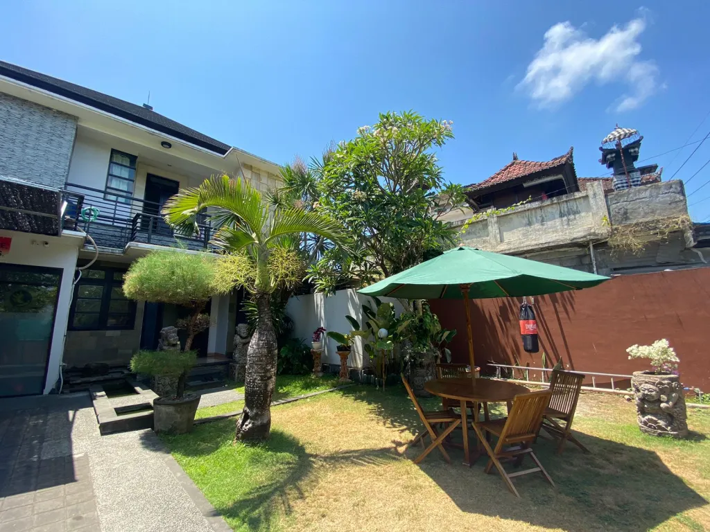

Contact Us
Don't hesitate to contact us, the Satu Nusa team will be ready to help you anytime

Contact Info
Address: Jl Tukad Punggawa Br. Dukuh No. 3, Serangan, South Denpasar, Denpasar City, Bali 80229
Email: info@yayasansatunusa.or.id
Phone: +62 852-1318-7640 (Indonesian)